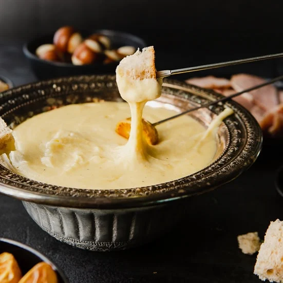
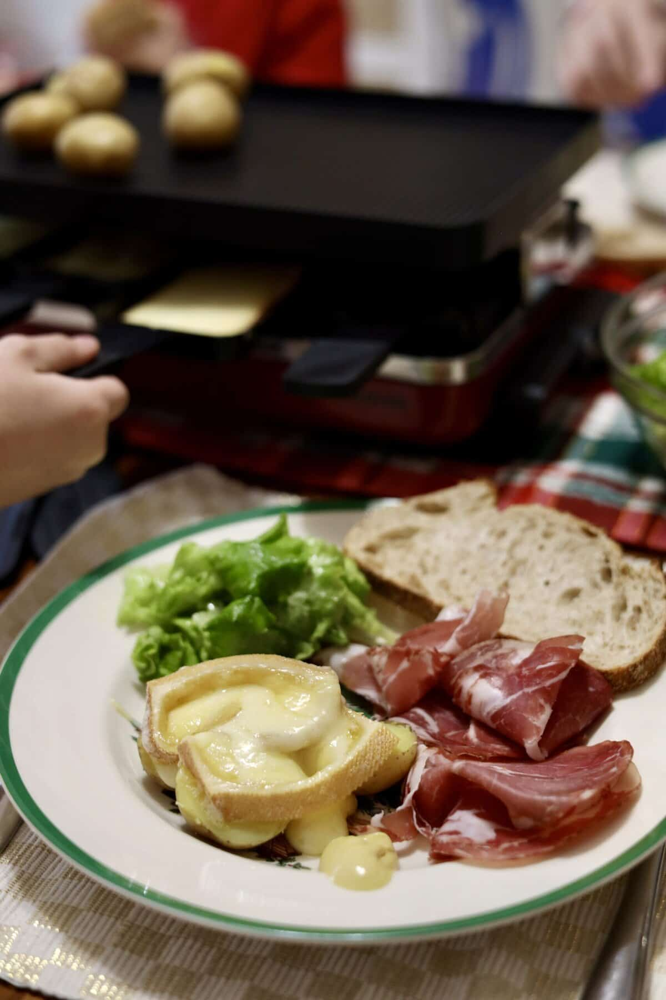
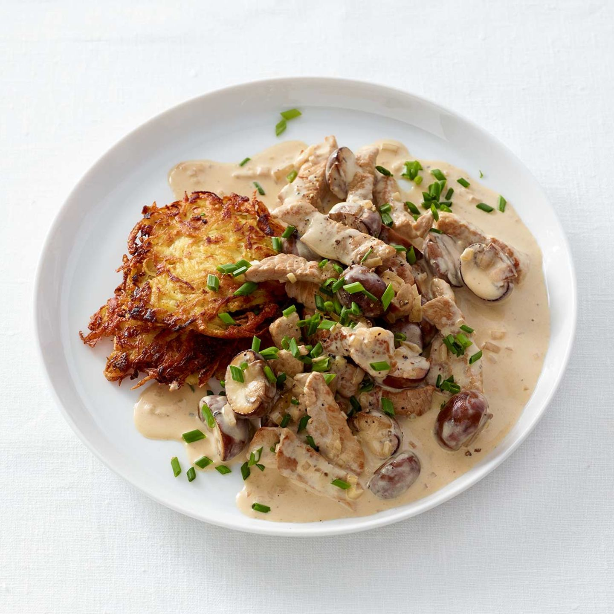
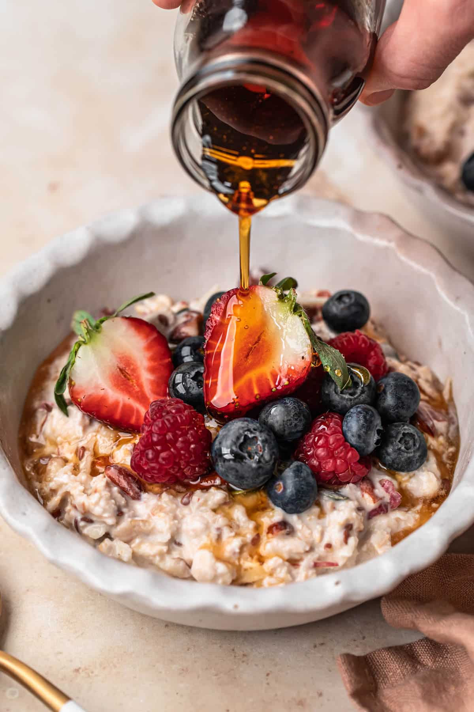

Swiss Traditional Foods
Cheese Fondue
Traditional Swiss melted cheese dish

Cheese fondue dates back to the 18th century in the Swiss Alps, where it was created by farmers during harsh winters. With limited food available, they combined hardened cheese, stale bread, and wine to make a warm and filling meal. Over time, fondue became a symbol of Swiss culture and togetherness, especially after being promoted as a national dish in the 1930s.
Rösti
Swiss potato dish

Rösti is a traditional Swiss dish made from potatoes that have been grated, formed into a cake, and fried. It's a staple of Swiss cuisine and particularly popular in the German-speaking regions of Switzerland.
Raclette
Melted cheese and Scraped onto boiled potatoes

Raclette is a rich and satisfying dish where cheese is melted and scraped onto boiled potatoes, pickles, and cured meats. Once a humble meal for Swiss shepherds, it has become a famous food worldwide. After skiing in Zermatt.
Zürcher geschnetzeltes
This creamy veal dish, cooked with white wine, onions, and mushrooms

This creamy veal dish, cooked with white wine, onions, and mushrooms, is a hallmark of Swiss cuisine. Originating in the mid-20th century, it was once a meal for the elite, beloved for its rich, velvety sauce and tender meat. Now a regular fixture in local taverns, it’s one of the top foods to try in Switzerland.
Bircher müesli
wholesome dish, made of oats, yogurt, fruit, and nuts

This wholesome dish, made of oats, yogurt, fruit, and nuts, was created by Swiss doctor Maximilian Bircher-Brenner in the early 1900s as a nutritious meal for his patients. Inspired by the Alpine diet, it soon became a breakfast staple, balancing health and flavor.